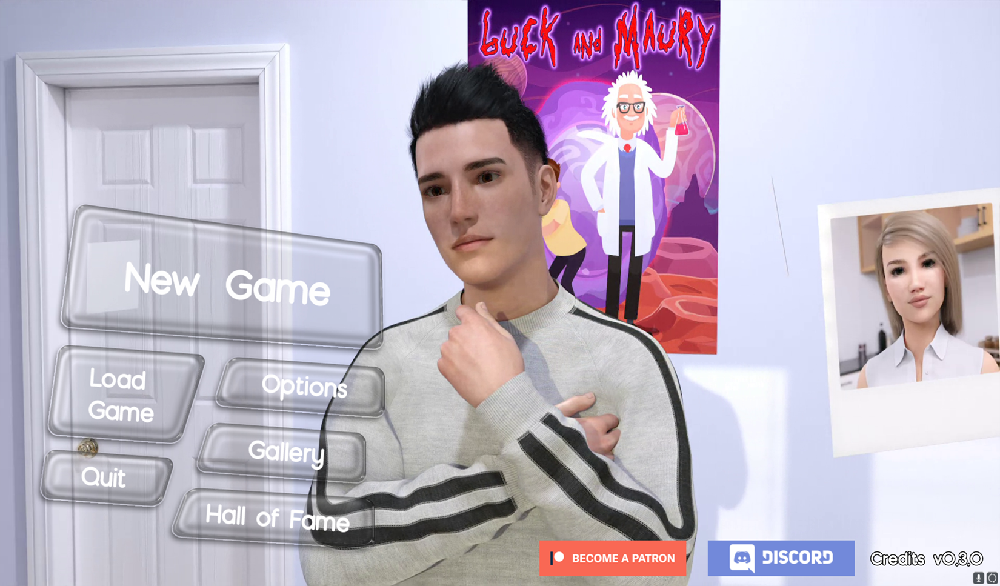
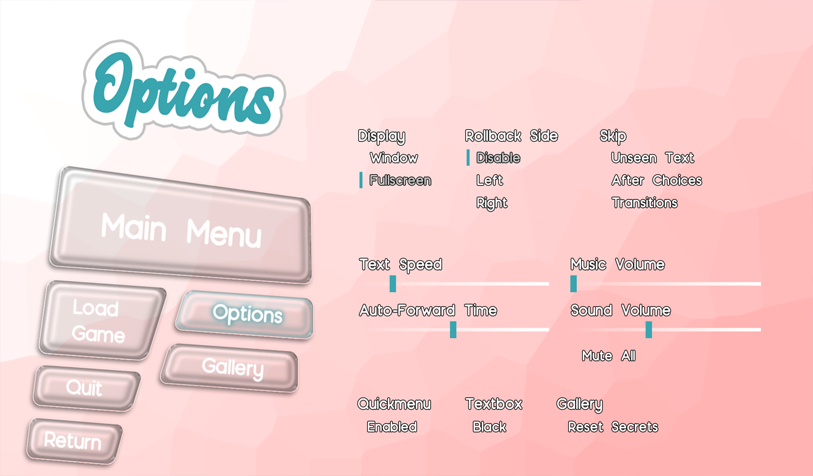

<div class="modal backdrop-blur-md" [ngClass]="projectToShow !== undefined ? 'modal-open' : ''">
  <div class="modal-box modal-overwrite !p-10">
    <fa-icon class="absolute top-6 right-6 hover:text-dAccentPurple hover:scale-110 text-5xl" (click)="onClose()" [icon]="faClose"></fa-icon>
    <div [ngSwitch]="projectToShow" class="flex flex-col items-center">
      <div *ngSwitchCase="'gifit'" class="flex flex-col items-center max-w-[66.7%]">
        <p class="text-5xl font-sans font-semibold mb-6">Gifit |  GIF Search webApp</p>
        <p class="text-xl font-sans mb-6 text-center">Gifit is a webApp created with Angular, TailwindCSS and DaisyUI utilizing the Giphy API. It enables users to search for Gifs or watch the trending Gifs or Clips of a day. You read right - even Clips, which are a BETA utility provided by Giphy to developers which apply for it. These Clips are described as Gifs with sound, but are actually MP4s. Every Gif or Clip can be added to a list of favorites to watch them at a later moment again.<br><br>I got the idea for this project by a coding-challenge provided from <a class="fancy-link" href="https://webundsoehne.com/" target="_blank">Web & Söhne</a>: <a class="fancy-link" href="https://gitlab.tailored-apps.com/ralph.harrer/angular-dev-challenge" target="_blank">The Coding Challenge</a></p>
        
        
      </div>
      <div *ngSwitchCase="'fattymania'" class="flex flex-col items-center max-w-[66.7%]">
        <p class="text-5xl font-sans font-semibold mb-6">Crypto dApp</p>
        <p class="text-xl font-sans mb-6 text-center">After launching a crypto NFT collection me and my team decided to create utility for its holders. This crypto dApp provides a Rarity Tracker where each NFT can be looked up to provide information about rarity of traits and its rank. Logged in with a wallet users are able to claim tokens for holding a certain amount of NFTs. These tokens moreover can be spend in the Marketplace. The frontend was built using Angular, TailwindCSS and DaisyUI. For the backend Node.js was used.<br><br>More services for creators are in the works.</p>
        
        
        
      </div>
      <div *ngSwitchCase="'vn'" class="flex flex-col items-center max-w-[66.7%]">
        <p class="text-5xl font-sans font-semibold mb-6">Visual Novel Game</p>
        <p class="text-xl font-sans mb-6 text-center">Due to the urge of creating my own game I started at the beginning of the pandemic with some research. Venturing into self-employment soon after I developed a subscription based Visual Novel where I used a Python framework called Ren'py. All images/videos were created with Daz3D rendering for countless hours using 3 GPUs. This project covered a lot of aspects from coding, to art/design works, but also community management.</p>
        
        
        
        
      </div>
    </div>
  </div>
</div>
